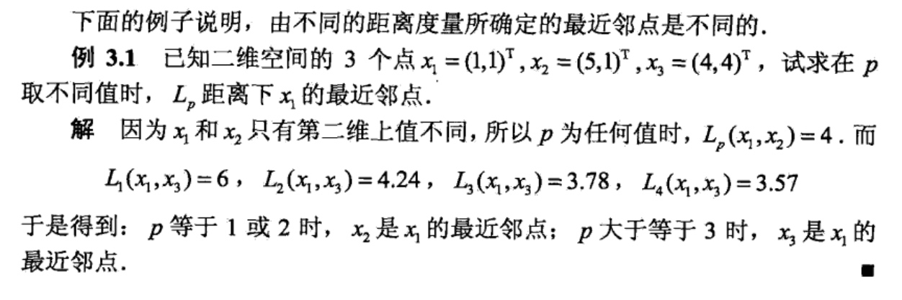
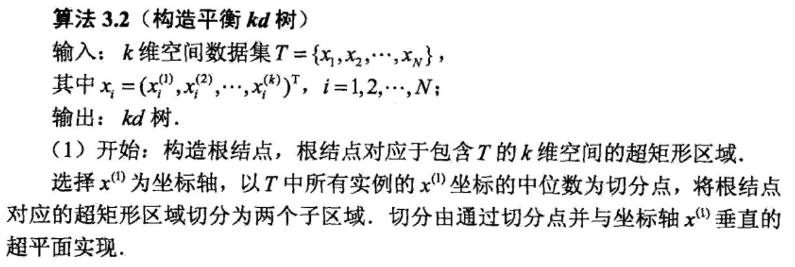
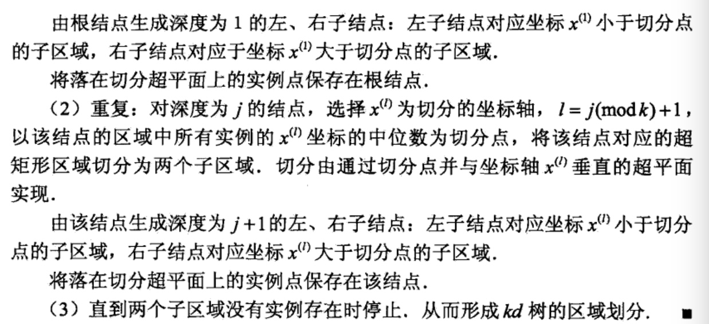

k近邻法
k近邻法（k-nearestneighbor,k-NN)是一种基本分类与回归方法。本书只讨论分类问题中的k近邻法。k近邻法的输入为实例的特征向量，对应于特征空间 的点；输出为实例的类别，可以取多类。k近邻法假设给定一个训练数据集，其中的实例类别己定。分类时，对新的实例，根据其k个最近邻的训练实例的类别， 通过多数表决等方式进行预测。因此，k近邻法不具有显式的学习过程。近邻法实际上利用训练数据集对特征向量空间进行划分，并作为其分类的“模型“，k值的选择、距离度量及分类决策规则是k近邻法的三个基本要素。k近邻法1968年由Cover和Hart提出。
k近邻算法
k近邻算法简单、直观：给定一个训练数据集，对新的输入实例，在训练数据集中找到与该实例最邻近的k个实例，这k个实例的多数属于某个类，就把该输入实例分为这个类，下面叙述k邻近算法。


k近邻模型
k近邻法使用的模型实际上对应于对特征空间的划分。模型由三个基本要素——距离度量、k值的选择和分类决策规则决定。
模型
k近邻算法中，当训练集、距离度量（如欧氏距离）、k值及分类局侧规则（如多数表决）确定后，对于任何一个新的输入实例，它所属的类唯一地确定。这相当于根据上述要素将特征空间划分为一些子空间，确定子空间里的每个点所属的类。这一事实从最近邻算法中可以看得很清楚。
特征空间中，对每个训练实例点\(x_i\),距离该点比其他点更近的所有点组成一个区域，叫作单元（cell).每个训练实例点拥有一个单元，所有训练实例点的单元构成对特征空间的一个划分。最近邻法将实例\(x_i\)的类\(y_i\),作为其单元中所有点的类标记（class label)。这样，每个单元的实例点的类别是确定的。下图是二维特征空间划分的一个例子。

距离度量
特征空间中两个实例点的距离是两个实例点相似程度的反映.k近邻模型的特征空间一般是n维实数向量空间\(R^n\)。使用的距离是欧氏距离，但也可以是其他距离，如更一般的\(L_p\)距离（\(L_p -distance\))或Minkowski距离（Minkowski distance)。
关于特征空间中两坐标点的距离定义为：

不同的距离定义，所求出的最近邻点是不同的。

k值的选择
k值的选择会对k近邻法的结果产生重大影响。
如果选择较小的k值，就相当于用较小的邻域中的训练实例进行预测，“学习”的近似误差（approximation error)会减小，只有与输入实例较近的（相似的）训练实例才会对预测结果起作用。但缺点是“学习”的估计误差（estimation error) 会增大，预测结果会对近邻的实例点非常敏感。如果邻近的实例点恰巧是噪声，预测就会出错.换句话说，值的减小就意味着整体模型变得复杂，容易发生过拟合。
如果选择较大的k值，就相当于用较大邻域中的训练实例进行预测。其优点是可以减少学习的估计误差。但缺点是学习的近似误差会增大。这时与输入实例 较远的（不相似的）训练实例也会对预测起作用，使预测发生错误.k值的增大就意味着整体的模型变得简单。
如果k=N,那么无论输入实例是什么，都将简单地预测它属于在训练实例中最多的类。这时，模型过于简单，完全忽略训练实例中的大量有用信息，是不可取的。
在应用中，k值一般取一个比较小的数值。通常采用交叉验证法来选取最优的k值。
分类决策规则
k近邻法中的分类决策规则往往是多数表决，即由输入实例的k个邻近的训练实例中的多数类决定输入实例的类。
多数表决规则（majority voting rule)有如下解释：如果分类的损失函数为0-1损失函数，分类函数为：

那么误分类的概率为：

对给定的实例\(x \in \chi\),其中最邻近的k个训练实例点构成集合\(N_k(x)\),如果涵盖\(N_k(x)\)的区域的类别是\(C_j\),那么误分类率是：

要使误分类率最小即经验风险最小，就要使\(\sum_{x_i\in{N_k(x)}}I(y_i=c_j)\)最大，所以多数表决规则等价于风险最小化。
k近邻法的实现：kd树
实现k近邻法时，主要考虑的问题是如何对训练数据进行快速k近邻捜索。这点在特征空间的维数大及训练数据容量大时尤其必要。
k近邻法最简单的实现方法是线性扫描（linear scan)。这时要计算输入实例与每一个训练实例的距离。当训练集很大时，计算非常耗时，这种方法是不可行的。
为了提高k近邻搜索的效率，可以考虑使用特殊的结构存储训练数据，以减少计算距离的次数。具体方法很多，下面介绍其中的kd树(kd tree)方法.
构造kd树
kd树是一种对k维空间中的实例点进行存储以便对其进行快速检索的树形数据结构。kd树是二叉树，表示对k维空间的一个划分（partition)。构造kd树相 当于不断地用垂直于坐标轴的超平面将k维空间切分，构成一系列的k维超矩形区域。kd树的每个结点对应于一个k维超矩形区域。
构造kd树的方法如下：构造根结点，使根结点对应于k维空间中包含所有实例点的超矩形区域；通过下面的递归方法，不断地对k维空间进行切分，生成子结 点。在超矩形区域（结点）上选择一个坐标轴和在此坐标轴上的一个切分点，确定一个超平面，这个超平面通过选定的切分点并垂直于选定的坐标轴，将当前超矩形区域切分为左右两个子区域（子结点）：这时，实例被分到两个子区域.这个过程直到子区域内没有实例时终止（终止时的结点为叶结点）。在此过程中，将实例保存在相应的结点上。
通常，依次选择坐标轴对空间切分，选择训练实例点在选定坐标轴上的中位数（median)为切分点，这样得到的kd树是平衡的。注意，平衡的kd树搜索时的效率未必是最优的。
下面给出构造kd树的算法：


下面给出一个例子，来反应上述算法的用途：
（中位数：一组数据按大小顺序排列起来，处在中间位置的一个数或两个数的平均值。）


搜索kd树
下面介绍如何利用kd树进行k近邻搜索。可以看到，利用kd树可以省去对大部分数据点的搜索，从而减少搜索的计算量。这里以最近邻为例加以叙述，同样的方法可以应用到k近邻。
给定一个目标点，搜索其最近邻。首先找到包含目标点的叶结点：然后从该叶结点出发，依次回退到父结点；不断査找与目标点最邻近的结点，当确定不可能存在更近的结点时终止。这样搜索就被限制在空间的局部区域上，效率大为提髙。
包含目标点的叶结点对应包含目标点的最小超矩形区域。以此叶结点的实例点作为当前最近点。目标点的最近邻一定在以目标点为中心并通过当前最近点的 超球体的内部（参阅图3.5)。然后返回当前结点的父结点，如果父结点的另一子结点的超矩形区域与超球体相交，那么在相交的区域内寻找与目标点更近的实例点。如果存在这样的点，将此点作为新的当前最近点。算法转到更上一级的父结点，继续上述过程。如果父结点的另一子结点的超矩形区域与超球体不相交，或不存在比当前最近点更近的点，则停止搜索。
下面叙述用kd树的最近邻搜索算法：
算法3.3 (用kd树的最近邻搜索）
输入：己构造的kd树；目标点X；
输出：x的最近邻。
(1) 在kd树中找出包含目标点x的叶结点：从根结点出发，递归地向下访问kd树。若目标点x当前维的坐标小于切分点的坐标，则移动到左子结点，否则移 动到右子结点。直到子结点为叶结点为止.
(2) 以此叶结点为”当前最近点“
(3) 递归地向上回退，在每个结点进行以下操作：
(a) 如果该结点保存的实例点比当前最近点距离目标点更近，则以该实例点为“当前最近点”
(b) 当前最近点一定存在于该结点一个子结点对应的区域。检查该子结点的父结点的另一子结点对应的区域是否有更近的点。具体地，检査另一子结点对应
的区域是否与以目标点为球心、以目标点与“当前最近点”间的距离为半径的超球体相交。
如果相交，可能在另一个子结点对应的区域内存在距目标点更近的点，移动到另一个子结点。接着，递归地进行最近邻搜索：
如果不相交，向上回退。
(4)当回退到根结点时，搜索结束。最后的“当前最近点”即为x的最近邻点。
如果实例点是随机分布的，kd树搜索的平均计算复杂度是O(logN)，这里N是训练实例数.kd树更适用于训练实例数远大于空间维数时的k近邻搜索。当空 间维数接近训练实例数时，它的效率会迅速下降，几乎接近线性扫描。
下面通过一个例题来说明搜索方法：